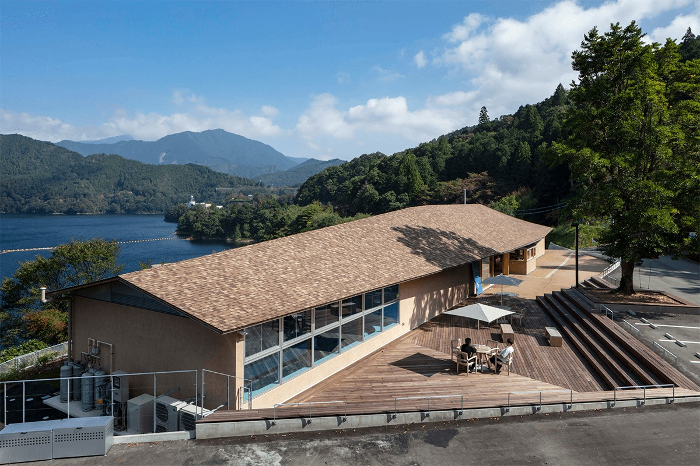

Префектура Коти · посёлок Тоса · озеро Самэура
Каноэ-терраса на озере Самэура: вода, которой живёт Сикоку

Осенью 2020 года на берегу Самэуры открылась «Каноэ-терраса»: база природных приключений, где каноэ, сапборд и велосипед начинаются прямо от воды. Рассказываем, что здесь построено и зачем ехать.
Вода, которой живёт остров
Озеро, которое поит весь Сикоку
Посёлок Тоса лежит ровно в центре Сикоку. Именно здесь стоит плотина Самэура, самый большой «бак с водой» западной Японии, водохранилище, которое поит весь Сикоку. По озеру можно плавать на каноэ и сапборде, и «Каноэ-терраса» на территории озёрной станции «Самэура-рэйкутаун» задумана как раз как такие ворота к воде: стартовая точка для прогулок на велосипедах напрокат и активностей на свежем воздухе, место, где встречаются туристы, спортсмены и жители посёлка.
К дизайну здесь отнеслись не менее серьёзно, чем к функциям: логотип озёрной станции нарисовал иллюстратор, а арт-дирекцией занималось котийское бюро «Аригато». Здание спроектировали архитекторы Кэй Ихара (мастерская TA+A) и Косукэ Вакуда (собственная мастерская), и разговор с ними многое объясняет в том, как терраса смотрит на озеро.
Кэй Ихара, архитектор. Выпускник аспирантуры университета Васэда, работал в компании Тайсэй; в 2014 году основал мастерскую TA+A. Проектирует, раскапывая ресурсы места и ландшафта. Приглашённый исследователь и преподаватель института архитектуры университета Мусасино.
Косукэ Вакуда, архитектор. Выпускник аспирантуры университета Васэда, работал в компании Тода; с 2010 года учился у архитектора Ирэ Масаюки, с 2017 года ведёт собственную мастерскую. Считает своим принципом находить в контексте места скрытую ценность и возвращать месту жизнь.
«Не отрезать здание от окружения, а сплести их»
«В горных районах почти вся земля с уклоном. Между горами течёт река, а на плоских клочках между рекой и склонами встают деревни. Здесь чуть-чуть подправляют природу и получают новую среду жизни, слитую с ней. Когда я приехал на место перед началом проекта, меня это глубоко тронуло».
Кэй Ихара
«Самэура, сердце горного края Рэйхоку, это вода, которая держит быт всего Сикоку: природный рельеф и плотина срослись в одно огромное водное пространство. Рядом и террасные поля Аикавы: человек как будто прорезал в склоне ступенчатые поля, и они слились с пейзажем. Так работают горные деревни: жизнь врезана в существующий ландшафт, и это их притягательность».
Косукэ Вакуда
«Старый дом отдыха „Самэура-со“ снесли и построили заново на соседнем участке, и земля освободилась: остались уступы, подпорные стенки, маленький пересечённый рельеф. Мы вплели здания в эту ткань, как нитки в плетение. Задача была не в том, чтобы архитектура вырезала себе кадр из окружения, а в том, чтобы здание и среда переплелись и породили разные места».
Кэй Ихара
«Большая крыша, парящая над горными гребнями, делает всю территорию удобной и для спортивного каноэ, и для отдыха, и для туризма. Открытое пространство в центре, с видом на озеро, мы задумали гибким: это штаб гайдов по природе и сельскому хозяйству посёлка».
Косукэ Вакуда
«Под широкой нависающей крышей получилось множество промежуточных зон, где можно отдохнуть и поговорить. Хочется верить, что за этим последует и развитие спортивного каноэ, и рост спортивного туризма, к которому готовится посёлок».
Кэй Ихара и Косукэ Вакуда
На воде и на суше
Чем заняться на озере
Главное здесь, конечно, вода. Каноэ, сапборд, велосипед: всё можно пробовать вместе с семьёй или друзьями, спокойно и без спешки, в той природе посёлка Тоса, какой она создана.
Каноэ на Самэуре
Прогулочное каноэ: руль берёшь сам и гребёшь по глади озера. Сезон: круглый год. Цена: от 7000 иен для взрослых, от 6500 иен для детей (без налога). Участники: с 4 лет. Длительность: около 3 часов.
Сапборд на Самэуре
Ощущения, которых не бывает на суше: будто шагаешь по воде, то бежишь, то просто стоишь и дрейфуешь. Сезон: круглый год. Цена: от 6500 иен для взрослых, от 6000 иен для детей (без налога). Участники: с 4 лет. Длительность: около 3 часов.
Велопрогулка «Тярипику»
Прокат велосипедов (своё тоже можно привезти). Трасса с умеренными подъёмами и спусками, с удовольствием проезжается насквозь: лес, сквозь который падает солнце, едет вместе с тобой. Сезон: круглый год. Цена: 2000 иен для взрослых и детей (без налога). Участники: с 4 лет. Длительность: около 3 часов.
Кафе у воды
В кафе подают напитки и сладости из местных продуктов. Зайти можно и без всякой активности: просто посидеть и посмотреть на озеро.
Каноэ-терраса озёрной станции «Самэура-рэйкутаун»
- Адрес
- префектура Коти, уезд Тоса, посёлок Тоса, Тай, 146-1
- Телефон
- +81 887-72-9919
- Часы работы
- 10:00–16:30
- Сайт
- mizuuminoeki.jp
Окно на озеро
Отель, из которого не хочется уезжать
На той же территории стоит отель «Самэура-со Лейксайд». Внутри тепло от дерева, выращенного в Коти и горном крае Рэйхоку, и время здесь идёт неспешно. Каждый номер смотрит окнами на озеро: широкая водная гладь в раме окна доступна из любой комнаты.
Номера
Твин. Сдержанные номера в местном дереве: можно расслабиться и смотреть на озеро. 12 номеров, до 3 гостей. Цена за человека: 7000 иен (один в номере), 5500 иен (двое), 4500 иен (трое), школьники 3500 иен. Все цены без налога.
Делюкс твин. Просторнее и на ступень выше: спокойный современный интерьер, из ванной тоже видно озеро. 2 номера, до 2 гостей. Цена за человека: 9000 иен (один в номере), 8200 иен (двое), школьники 3500 иен. Все цены без налога.
Японская комната. Татами, семья или компания, озеро из окна и из ванной. 2 номера, до 4 гостей. Цена за человека: 9000 иен (один в номере), 8200 иен (двое), 7000 иен (трое), 6000 иен (четверо), школьники 3500 иен. Все цены без налога.
В ресторане отеля готовят из продуктов, выращенных щедрой природой Коти, включая местную кухню. Зайти на еду можно и без ночёвки: кроме сетов, есть отдельные блюда японской и европейской кухни. Ужин с 17:00 до 20:00 (последний заказ 19:30), завтрак с 7:30 до 9:00 (вход до 8:30, только для проживающих), обед с 11:00 до 14:00 (последний заказ 13:30). Зал до 48 мест; при отеле есть переговорные и банкетный зал.
Отель «Самэура-со Лейксайд»
- Адрес
- префектура Коти, уезд Тоса, посёлок Тоса, Тай, 146-1
- Телефон
- +81 887-82-1020
- Заезд / выезд
- с 16:00 до 22:00 / до 10:00
- В номерах
- ванна и туалет, кондиционер и отопление, телевизор, холодильник, электрический чайник
- Сайт
- mizuuminoeki.jp
Озёрная станция не заканчивается террасой и отелем: к ней относится и кемпинг «Самэура тэнто-паарк» в обновлённом лесном парке. После ночёвки у озера остаются силы ещё на один день в котийских горах: здесь для этого всё готово.
Фото: Сигэо Огава.